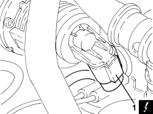

1080C24 E.G.R. SYSTEM SOLENOID - R + R
- Path
- Procedures > 10 ENGINE > 1080 EMISSION CONTROL SYSTEM > 1080C EXHAUST GAS RECIRCULATION SYSTEM (E.G.R.) > 1080C24 E.G.R. SYSTEM SOLENOID - R + R
- Kind
- repair procedure (removal / refitting; the operation number is the code)
- Applies to
- engines: 2.4 JTD 20v; all production periods
- Interactive page
- https://sloeber94.github.io/elrnDB-aBrrSpdr/en/#/946003025
Applies to: engines: 2.4 JTD 20v; all production periods
 Removing
Removing
 Refitting
RefittingOp. 1016A10 SOUND-PROOFING COVER - R.R
1. Disconnect the electrical connection from the EGR system solenoid
Description | Connector | |
|---|---|---|
1 | EGR solenoid valve |

Applies to: engines: 2.4 JTD 20v; all production periods
1. Undo the bolts fixing the exhaust gas outlet from the water/exhaust gas heat exchanger for the E.G.R. system, E.G.R. system solenoid valve side.
2. Undo the fixing bolts (2a) and remove the E.G.R. system solenoid (2b).
- Remove the gasket.

Applies to: engines: 2.4 JTD 20v; all production periods
Refitting
Removing- Place the gasket back in its housing.
1. Place the E.G.R. system solenoid (1a) in its housing and fasten it tightening the bolts (1b) to the recommended torque.
Component | Fastening | dia | Value (daNm) | Validity |
|---|---|---|---|---|
E.G.R. system solenoid valve | Bolt | M8 | 2.3 ÷ 2.8 | 2.4 JTD 20v |
2. Tighten the bolts fixing the exhaust gas outlet from the water/exhaust gas heat exchanger for the E.G.R. system, E.G.R. system solenoid valve side to the recommended torque.
Component | Fastening | dia | Value (daNm) | Validity |
|---|---|---|---|---|
E.G.R.system exhaust gas/ water heat exchanger - E.G.R. solenoid side | Bolt | M8 | 2.3 ÷ 2.8 | 2.4 JTD 20v |

Applies to: engines: 2.4 JTD 20v; all production periods
- Connect the electrical connection to the EGR system solenoid